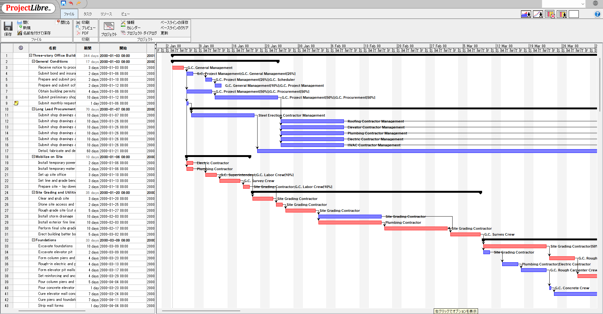

ProjectLibre-0.0.1.msi
通常の Windows インストーラーです。スタートメニュー登録、ショートカット作成、関連付けを含む標準的な導入向けです。
ProjectLibre をベースに、現代 JDK での運用、Windows 配布、Gantt 操作性、共同利用ワークフローを実用寄りに改善したデスクトップ版です。
元の使い勝手を保ちながら、XLSX 対応、共有ファイル向けのローカルコラボレーション、表示まわりの不具合修正と操作改善を取り込んでいます。


ここで挙げている改善点は、ProjectLibre 1.9.8 系の更新コミット
0530be22 を基準にした差分です。
ProjectLibre は WBS、Gantt、依存関係、進捗、リソース配分を扱えるデスクトップ型のプロジェクト計画ツールです。この fork では、元のコードベースを保ちながら、現代的な Java 環境で継続利用しやすいように更新しています。
このページはリポジトリの docs/ から GitHub Pages で配信する前提です。スクリーンショットは README と同じものを使用し、ダウンロードと変更点の案内を 1 ページにまとめています。